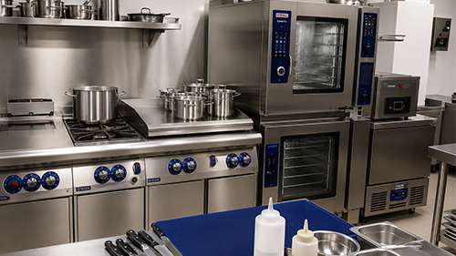
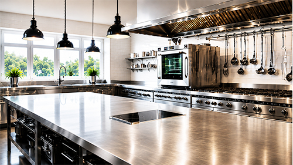
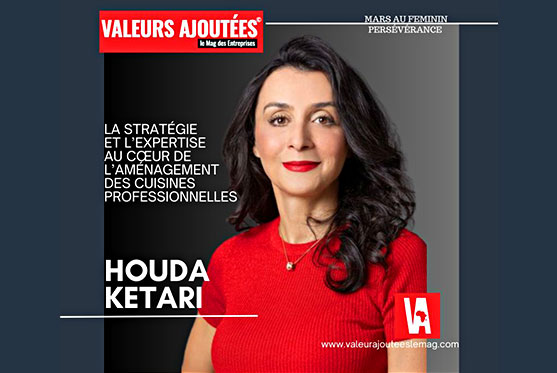
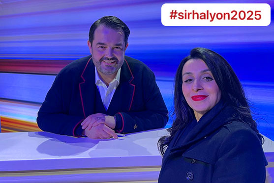
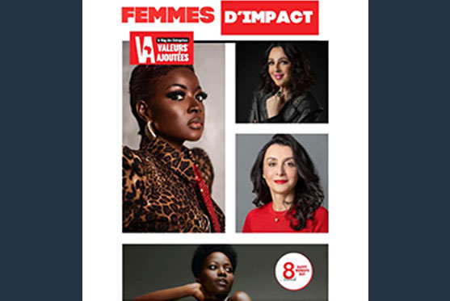
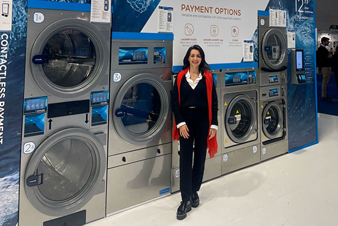
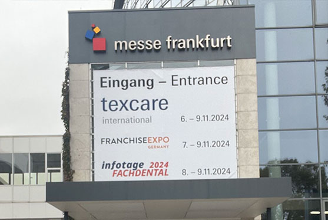
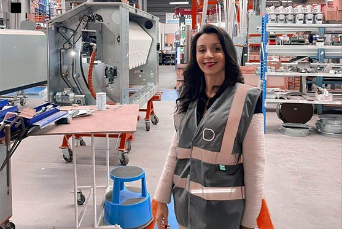

HK Consulting est un bureau d’études et de conseil spécialisé dans les cuisines professionnelles et les buanderies professionnelles. Basé en Tunisie et intervenant à l’international, notre bureau accompagne des projets dans différents secteurs d’activité, avec une approche fondée sur l’écoute, la rigueur technique et la compréhension des besoins réels de chaque client.
Fort de plusieurs années d’expérience, HK Consulting développe des solutions adaptées aux exigences de chaque projet, en accordant une attention particulière à la fonctionnalité des espaces, à l’optimisation des implantations et à la qualité globale des études techniques réalisées.
Notre bureau intervient auprès d’investisseurs, d’hôtels, de restaurants, de laboratoires de pâtisserie, de collectivités, d’écoles et d’établissements spécialisés, en apportant une vision professionnelle, structurée et orientée terrain.

HK Consulting accompagne les projets de cuisines professionnelles et de buanderies professionnelles à travers une approche basée sur l’étude et le conseil, les plans d’implantation, les dossiers de consultation et le suivi technique des projets. Notre expertise comprend notamment :
Chaque étude est développée selon les contraintes réelles d’exploitation afin de garantir des espaces cohérents et adaptés aux exigences du terrain.
Basé en Tunisie et intervenant à l’international, HK Consulting met plusieurs années d’expérience au service de projets dans les secteurs de l’hôtellerie, de la restauration, des laboratoires, des collectivités et des établissements spécialisés.

HK Consulting accompagne des projets de cuisines professionnelles et de buanderies professionnelles dans différents secteurs d’activité, en Tunisie et à l’international. Nous intervenons notamment dans les domaines suivants :
Notre compétence est d'offrir la meilleure réponse aux besoins du projet.
La cuisine professionnelle doit répondre aux besoins spécifiques des restaurants.
Le dossier de consultation sera basé sur l'expertise technique.
Une connaissance approfondie des normes en vigueur et une maîtrise de l'aménagement de l'espace.
Expérimentée et toujours motivée, je souhaite partager et faire profiter cette expertise à mes clients.
Chaque projet est étudié selon les besoins d’exploitation, les contraintes techniques et les exigences propres à chaque activité.
Notre offre satisfait les besoins spécifiques de chaque client de manière innovante et efficace.

Trois piliers qui définissent Houda Ketari, une figure incontournable dans le domaine de l’aménagement des cuisines professionnelles et des buanderies.
Dans un secteur où la précision et la technicité dictent les règles du jeu, elle s’est imposée comme une référence, combinant savoir-faire technique et stratégie de développement.

Jean-François Piège est une figure emblématique de la cuisine comptenporaine, connu pour sa rigueur, sa précision et sa quête permanente de l'excellence . une telle rencontre est non seulement source d inspiration mais permets aussi de mieux appréhender les défis et les opportunités dans le monde de la restauration et de l'équipement profesionnel.

Trois piliers qui définissent Houda Ketari, une figure incontournable dans le domaine de l’aménagement des cuisines professionnelles et des buanderies.
Dans un secteur où la précision et la technicité dictent les règles du jeu, elle s’est imposée comme une référence, combinant savoir-faire technique et stratégie de développement.

L'évènement a été riche tant dans les échanges avec partenaires et collaborateurs que dans le développement des connaissances produits. Cet accès privilégié aux innovations a permis d'améliorer les méthodes de travail, d'obtenir un meilleur plan d'aménagement et d'optimiser les process d'économie d'eau et d'énergie.

Visiter le salon dédié à la buanderie a été très enrichissant au niveau de la découverte des innovations. L'échange avec les experts et les différents intervenants du métier est tout aussi importante dans l'apprentissage et le développement des connaissances quant aux avancées du marché et aux nouvelles solutions proposées par le secteur.

La visite de l’usine Danube Laundry à Lamotte-Beuvron a permis d’approfondir notre connaissance des équipements, des procédés de fabrication, des matériaux utilisés et des exigences de maintenance. Cette immersion au cœur de la production renforce notre expertise et notre capacité à concevoir des buanderies performantes, durables et parfaitement adaptées aux besoins de chaque projet.